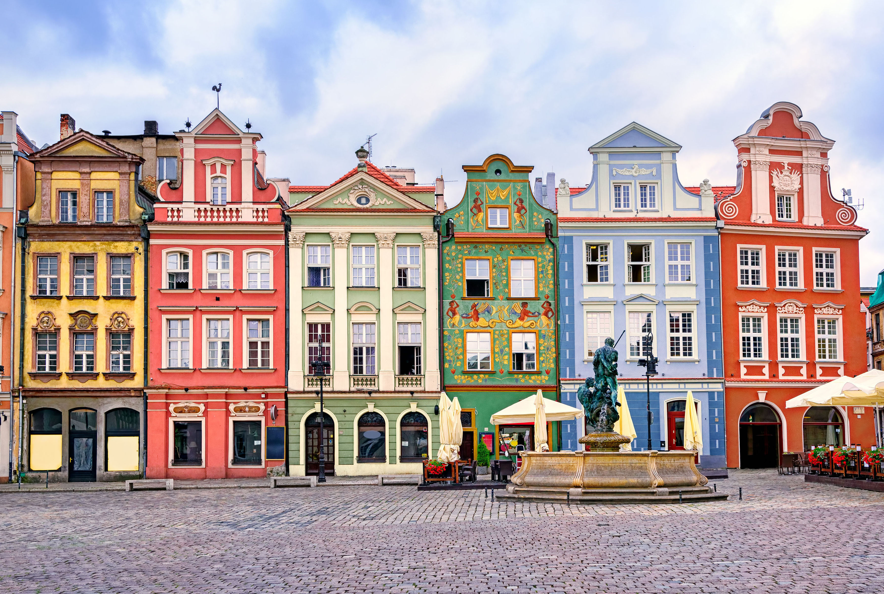

Atención al viajero
Atención personalizada al viajero a través del e-mail, teléfono y en la oficina en horario indicado. Ofrecemos: - Información turística y práctica - Consejos y sugerencias - Descarga de folletos - Folletos y mapas gratuitos - Servicios B2B para agencias de viajes y medios
Horario Horario habitual de atención al público de lunes a jueves de 10.00 a 17.00 h y viernes de 10 .00 a 15.00. Atención al público y envío de folletos. El horario habitual puede sufrir cambios (asistencia a ferias y eventos profesionales fuera de la oficina). Rogamos comprobar el horario llamando al teléfono 91 541 48 08